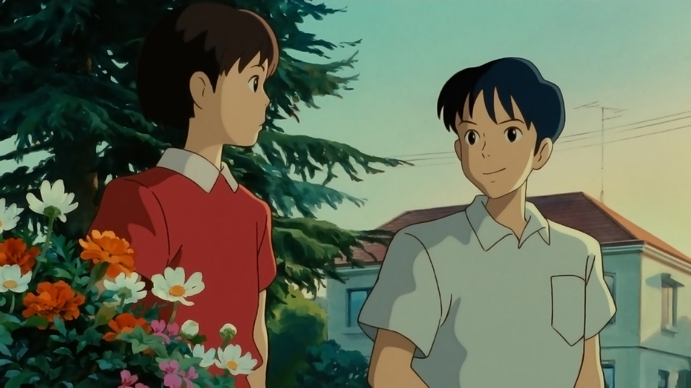

La storia è ambientata a Tokyo nel 1994. Shizuku, giovane studentessa dell'ultimo anno delle scuole medie, è appassionata di libri e di letture e spesso si reca alla biblioteca di quartiere per prendere in prestito dei volumi. Un giorno si accorge che nella scheda dei prestiti stranamente ricorre sempre un cognome prima del suo, Amasawa, ed incomincia quindi a fantasticare su chi sia questo ragazzo che sembra avere i suoi stessi gusti letterari. Qualche giorno dopo, mentre si dirige verso la biblioteca, Shizuku incontra sulla metropolitana un gatto, salito nella sua stessa carrozza, e decide di seguirlo; nel fare ciò, si trova a salire per le vie di un quartiere ordinato e silenzioso, in collina, fino ad arrivare a un negozio di antiquariato, dove entra a curiosare. L'anziano proprietario mostra alla ragazza alcuni dei tesori del suo negozio, tra cui uno strano orologio e una statuetta di pregiata fattura che rappresenta un gatto in stazione eretta, vestito elegantemente di tutto punto, con tanto di scarpe, cappello a cilindro e bastone da passeggio, che egli chiama “il barone[4]”. Shizuku fa anche la conoscenza di Seiji Amasawa, il nipote dell'antiquario, che altri non è che la misteriosa persona che leggeva i suoi stessi libri. Seiji ama molto la musica, e il suo sogno è quello di diventare un bravo liutaio. Col passare dei giorni l'amicizia tra Shizuku e Seiji si rafforza sempre di più, finché il ragazzo non rivela di dover partire per un tirocinio di due mesi a Cremona presso un mastro liutaio, per mettersi alla prova nell'arte di costruire violini. Nell'attesa del suo ritorno, anche Shizuku promette a se stessa di testare le sue capacità provando a scrivere un romanzo. Dopo un colloquio con i suoi genitori Shizuku viene da loro autorizzata ad accantonare per due mesi gli impegni scolastici per portare avanti il suo progetto, nonostante ella non ne riveli l'esatta natura e incombano le verifiche per l'ingresso alle scuole superiori. Appena finito il romanzo, che ha come protagonista il barone, il gatto dalle sembianze umane, la ragazza porta il manoscritto all'antiquario, che lo legge e ne rimane profondamente colpito, incoraggiandola a coltivare il suo dono creativo. Contenta di ciò che è stata in grado di realizzare, pur consapevole dell'ingenuità e dell'imperfezione del lavoro, e determinata a progredire nella tecnica della scrittura, Shizuku decide di riprendere il suo percorso di studio per poi iscriversi alle scuole superiori. Alla fine del film Shizuku, svegliatasi alle prime luci dell'aurora e affacciatasi alla finestra, vede Seiji che, rientrato in anticipo dall'Italia, l'aspetta sotto casa. Il ragazzo la conduce in bicicletta al suo "posto segreto", su un'altura, da dove i due guardano la città, dapprima totalmente nascosta dalla nebbia, riapparire al tepore dell'alba. Qui Seiji chiede a Shizuku se vorrà sposarlo, un giorno: Shizuku, commossa, risponde di sì.